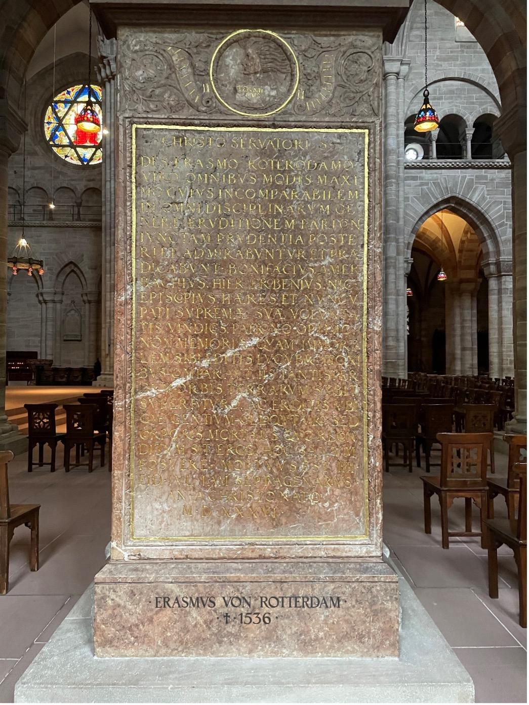

Zu Ort, Entstehung und Inschrift des Epitaphs
Die Abbildung zeigt das Epitaph des Erasmus von Rotterdam (um 1466–1536)
im Basler Münster. Es wurde aus rotem Kalkstein 1538 von dem Steinmetz
und Baumeister Hans Mentzinger (um 1492–1550) gefertigt. Ursprünglich
befand sich das Epitaph im Mittelschiff des Münsters vor dem Lettner.
Als das Münster im 19. Jahrhundert umgestaltet wurde, versetzte man das
Epitaph an seinen jetzigen Platz im Nordseitenschiff. Erst geraume Zeit
später, im Jahr 1974, wurde anlässlich einer Münstergrabung das Grab des
Erasmus von Rotterdam entdeckt, worauf dieses freigelegt und die Gebeine
des Verstorbenen zu Füssen des Epitaphs umgebettet wurden.
Das Medaillon über der gerahmten goldenen Inschrift zeigt im Profil den
römischen Gott des Grenzsteins Terminus mit dem Zusatz seiner Devise
concedo nulli (ich weiche niemandem). Dieser Spruch trifft auf Erasmus
von Rotterdam bestens zu. Unter anderem sein Zeitgenosse Martin Luther
(1483–1546) machte es Erasmus zum Vorwurf, dass dieser in seinem Denken
und Handeln niemandem zu weichen gewillt war. Darauf werde ich später
nochmals eingehen, zunächst möchte ich aber den Blick auf die gerahmte
Inschrift des Epitaphs richten, um von dort aus das Wirken des Erasmus
und dessen historisch-theologische Bedeutsamkeit für Basel und ganz
Europa zu skizzieren. In der Übersetzung der Freunde Basler
Münsterbauhütte lautet die gerahmte Inschrift wie folgt:
Christus, dem Retter, geweiht, dem Desiderius Erasmus von Rotterdam, dem in jeder Beziehung grossartigen Mann, dessen unvergleichliche Bildung in jeder Art der Wissenschaften, verbunden mit gleichwertiger Klugheit, die Nachwelt bewundern und preisen wird, haben Bonifacius Amerbach, Hier[onymus] Froben und Nic[olaus] Bischoff als Erben [heres] und Vollstrecker seines letzten Willens ihm (also), dem ausgezeichneten Patron, nicht für sein Andenken, das er selbst durch die Herausgabe seiner geistigen Arbeiten unsterblich gemacht hat, durch die es solange, als der Erdkreis stehen wird, weiterleben und mit den Gebildeten aller Völker sprechen wird, sondern für seinen sterblichen Körper, damit er bestattet werden kann, diesen Stein gesetzt. Er starb am vierten Tag vor den Iden des Juli [11./12. Juli], schon 70-jährig, im Jahre seit Christi Geburt 1536. (Freude Basler Münsterbauhütte)
Epitaph des Erasmus von Rotterdam. (Bild: Anna Gerbig)
Erasmus’ Werk und Wirken
Wie sich der Inschrift entnehmen lässt, war der in den Niederlanden
geborene Erasmus von Rotterdam (genaues Geburtsdatum unbekannt) ein
hochgebildeter Mensch, ein herausragender Gelehrter des
Renaissance-Humanismus. Erasmus war Philologe als auch Theologe und
Priester. Bemerkenswerterweise ist das Epitaph nicht zu seiner
Erinnerung gedacht, so verlautet die Inschrift, da Erasmus «sein
Andenken […bereits selbst] durch die Herausgabe seiner geistigen
Arbeiten unsterblich gemacht hat». Zu Erasmus’ Werken, die
wirkungsgeschichtlich von grosser Bedeutung sind, zählen unter anderen
das erstmals 1516 erschienene Novum Instrumentum: eine
Veröffentlichung des Neuen Testaments, welches Erasmus’ Kommentar zum
griechischen Text, gewissermassen eine Anleitung zur Bibellektüre mit
philologischen Anmerkungen zu schwierigen Textstellen, beinhaltet sowie
Erasmus’ eigene lateinische Übersetzung des griechischen Urtextes. In
der Welt der humanistischen Gelehrten erregte das
Novum Instrumentum grosses Aufsehen – und stiess bei manchen
konservativen Dogmatikern auf Widerstand. Für die Reformation kann es
als wegbereitend bezeichnet werden. 1519 wurde die zweite Ausgabe unter
dem Titel Novum Testamentum herausgegeben, wobei diese zweite
Ausgabe von Luther wie auch von Zwingli (1484–1531) für deren
Bibelübersetzungen benutzt wurde.
In seinem bereits 1503 veröffentlichten
Enchiridion militis christiani
(Handbüchlein des christlichen Streiters) begegnet Erasmus von Rotterdam
den Lesenden als Bibelhumanist, dabei erscheint Christus, in welchem
alle Weisheit sei, als Zentrum und angestrebtes Ziel eines jeden
tugendhaften Lebens. Diese christologische Zentralität wird später
Luther in seine Theologie aufnehmen, wogegen bei letzterem – anders als
bei Erasmus – das Christ:insein, nicht als menschliche Tugend
beansprucht wird.
Weiter vertritt Erasmus im Enchiridion militis christiani den
Anspruch, dass auch Laien, also theologisch und philologisch
Ungebildete, Zugang zur Bibel erhalten, denn die Beschäftigung mit der
Bibel, vor allem mit dem Neuen Testament, führe zu wahrer Frömmigkeit,
ja zum wahren Menschsein. Hierin wird das Christ:innentum ethisch
aufgeladen, kommt einer Philosophie fürs Leben gleich. Dieses Programm
einer Philosophie Christi sowie Erasmus exakte philologische
Bibelexegese zeugen von Erasmus’ humanistischem Geist.
Zum Enchiridion militis christiani ist ferner zu bemerken, dass
Erasmus darin nicht zuletzt an die Verantwortung des Klerus appelliert,
ein christlich angemessenes, das heisst: dem Evangelium entsprechendes
Leben zu führen, und dies nicht nur durch Worte, sondern auch in Taten.
Dadurch solle das eigene Leben als christliches Zeugnis wahrnehmbar
werden. So genügt nach Erasmus die äussere Teilnahme an den Sakramenten
nicht, um ein wahrhaft christliches Leben zu führen, vielmehr müssten
dazu die Sakramente in deren Bedeutung verinnerlicht, also vergeistigt,
werden.
Im Moriae Encomium (Lob der Torheit oder: Lob der Narrheit),
welches erstmals 1511 und erneut 1514 erschien, also wenige Jahre vor
der Herausgabe des Novum Testamentum, mündet Erasmus’ Appell an
den Klerus im Enchiridion militis christiani in eine scharfe
Kritik an der scholastischen Theologie und der erstarrten äusserlichen
Frömmigkeit der Kirche – und doch bleibt Erasmus der traditionellen
Kirche treu. Abermals wird er im Zuge der Reformation von
reformatorischer Seite, insbesondere von Luther, dazu gedrängt, sich
klar zu positionieren, sich für die Reformation auszusprechen – doch
dazu kommt es nicht, wobei an dieser Stelle erneut auf die Inschrift im
Medaillon auf dem Epitaph des Erasmus von Rotterdam verwiesen sei.
Concedo nulli (ich weiche niemandem) steht dort geschrieben:
Erasmus bleibt Zeit seines Lebens ein freier Geist, der sich nicht
festlegen lassen will, in diesem Sinne niemandem weicht – weder der
reformatorischen noch der traditionellen Seite. Stefan Zweig (1881–1942)
beleuchtet in Triumph und Tragik des Erasmus von Rotterdam in
feinsinnigster Weise die denkerische Unabhängigkeit des Erasmus’ – wie
auch dessen Harmonieliebe, die ihn letztlich davon abhält, ein radikales
Denken und Handeln, wie etwa jenes eines Martin Luthers, mitzutragen.
Aufruhr lehnt Erasmus ab. Was er anstrebt, ist keine Veränderung in den
äusseren Strukturen, sondern ein Wandel in der innerlichen Mentalität
der Kirche. So wird Erasmus auch zum geistigen Anreger des
Reformkatholizismus.
Erasmus in Basel
Im 16. Jahrhundert hat die Stadt Basel, in welcher um 1460 die erste Schweizer Universität gegründet wurde, sich etabliert als Wissens-, Bildungs- und Buchdruckstätte. So zieht es denn auch den Gelehrten Erasmus 1514 nach Basel, wo er sich zwei Jahre aufhält. Zu dieser Zeit ist er bereits in ganz Europa berühmt als Literat und Latinist. Johannes Froben (ca.1460–1527), ein humanistisch gebildeter Basler Drucker, wird zu Erasmus’ eigentlichem Verleger. Er ist es, der Erasmus zur Veröffentlichung des erwähnten Novum Instrumentum drängt. Erasmus’ Schriften haben hohe Auflagen und finden weite Verbreitung. In Basel wird Erasmus im Jahr 1517 zum Mitgründer des Collegium Trilingue, einer Einrichtung zum Studium der lateinischen, griechischen und hebräischen Sprache. Zu dieser Zeit ist eine solche Institution in Europa einmalig. Erasmus weilt in den Jahren 1514–1516 sowie von 1521–1529 in Basel und kehrt ein letztes Mal 1535 dorthin zurück. Welch hohes Ansehen der sogenannte Humanistenfürst Erasmus von Rotterdam in Basel geniesst, zeigt sich nicht zuletzt darin, dass er – trotz seiner ablehnenden Haltung gegenüber der Reformation und als katholischer Priester – 1536 im mittlerweile protestantisch gewordenen Basler Münster beigesetzt wird.
Beate Heiniger ist Studentin der Theologie im Master an der Universität Bern.
Weitere Artikel von {{ author.author }} finden Sie hier:
Zur Vertiefung:
- Erasmus von Rotterdam: Das Lob der Torheit, hg. von Zathammer Stefan und übersetzt von Gail Anton J., Stuttgart 2022.
- Dill Ueli / Schierl Petra (Hgg.): Das bessere Bild Christi. Das Neue Testament in der Ausgabe des Erasmus von Rotterdam, Basel 2016.
- Freunde Basler Münsterbauhütte (Übersetzende der lateinischen Epitaph-Inschrift): Erasmus von Rotterdam (11.01.2023).
- Hauschild Wolf-Dieter, «Bibelhumanismus bei Erasmus: ‹Philosophie Christi› und Kirchenreform», in: ders., Lehrbuch der Kirchen- und Dogmengeschichte. Bd. 2: Reformation und Neuzeit, 4. Aufl. München 2010, 30–33.
- Hauschild Wolf-Dieter: «Gegensatz zwischen Luther und Erasmus», in: ders., Lehrbuch der Kirchen- und Dogmengeschichte. Bd. 2: Reformation und Neuzeit, 4. Aufl. München 2010, 64–65.
- Welzig Werner: Erasmus von Rotterdam. Ausgewählte Schriften, Bd. 3, Darmstadt 1967.
- Zweig Stefan: Triumph und Tragik des Erasmus von Rotterdam, 25. Aufl., Frankfurt am Main 2017.